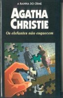

Os Elefantes não Esquecem
Elephants can Remember
Nesta divertida e bem escrita novela, Poirot conta com a valiosa ajuda de Ariadne Oliver, autora de novelas policiais, e Agatha Christie, ironicamente, representa a si mesma, ainda que os papéis estejam invertidos: Agatha, como escritora, faz o papel da mítica Ariadne, que conduz Poirot pelo labirinto da intriga por ela inventada; e Ariadne Oliver, como personagem da ficção entra no labirinto de onde retira Poirot. A senhora Oliver propõe a Poirot investigar a verdadeira causa da morte de um casal, que segundo a polícia, teria se suicidado anos antes. Para isso, a senhora Oliver se dedica a procurar “elefantes” — ou seja, as pessoas que lembram os trágicos eventos do passado — que fornecem ao grande detetive os dados para ele processar na famosa massa cinzenta do seu cérebro. Quando por fim Poirot desenterra a terrível verdade, Agatha Christie diz, valendo-se dos lábios de Ariadne: “...graças a Deus, aos seres humanos foi concedida a faculdade de esquecer”.
Arthur Nogueira: O genial Hercule Poirot e a simpática Ariadne Oliver tentam desvendar um crime qua aconteceu há muito tempo, o assassinato do casal Ravenscroft, pai da afilhada de mrs. Oliver, Celia. Consultando elefantes (pessoas que segundo a lenda não esquecem) eles chegam a mais um triunfante e inesperado final.